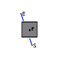
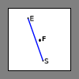
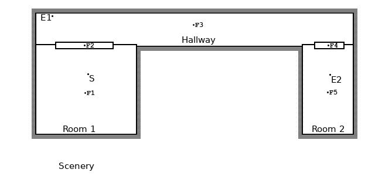

Occlusion is a method to alter the sound properties based on the relative position of the emitter, the sensor and all audio-frames that separate them and have occlusion defined.
Occlusion will use ray-tracing techniques to trace back the sound path from the emitter all the way back to the sensor. When the emitter is registered at an audio-frame which is registered at another audio-frame which is registered at a third audio-frame which is registered at the mixer then AeonWave makes sure that none of the audio frames block the sound path. And if it is blocked it will alter the sound properties accordingly. If one, or more, of the audio-frames between the emitter and the sensor does not define occlusion it will simply be skipped in the test.
Occlusion will gradually adjust the gain from unaltered when the obstruction is not blocking the sound path from the emitter to the sensor, to (1.0 - density) when the obstruction is directly between the emitter and the sensor. Occlusion will also change the frequency response of the emitter if the obstruction is partly blocking the path from the emitter to the sensor.
Occlusion will affect the overall gain when defined for the volume-filter and will affect the gain of the direct path when defined for the reverb-effect.
|
Normal occlusion defines an obstruction in 3D space which could block the path of the sound from the emitter the sensor when it is positioned between them. This can be used to simulate objects that block the sound like a statue or a door. By altering the density factor a closing door could be simulated. |
 |
|
Inverse occlusion defines a cavity in 3D space which does not affect the path of the sound from the emitter to the sensor if it is positioned between them. This can be used to simulate a convincing space like a room, a shed or a tunnel. |
 |
If two defined occlusion objects overlap they are regarded as a possible sound path. If two adjacent occlusion objects do not intersect they are regarded as individual objects which could block the sound path.
Consider the following scene (audio example):
F1 is registered to the Mixer, F2 is
registered to F1, F3 is registerd to F2, E1 and F4 are registered to F3,
F5 is registered to F4 and E2 is registered to F5
F1, F3 and F5 are declared AAX_INVERSE and represent different rooms.
If either de Sensor or an Emitter is outside the defined dimensions the
occlusion will test true and the sound is inaudible.
F2 and F4 are defined AAX_TRUE however and their dimensions both overlap with the room they want to unlock and with the Hallway.
Now if the density of F2 is set to (much) less than 1.0, which simulates a (partly) open door, it allows the sound of E1 to pass through F2 and subsequently to the Sensor.
Because the audio-frames are defined indoor the sound will now come from the direction of F2 instead of directly from E1 or E2.
It is up to the developer to make sure the path from the emitter to the sensor is always along the desired tree of audio-frames.
